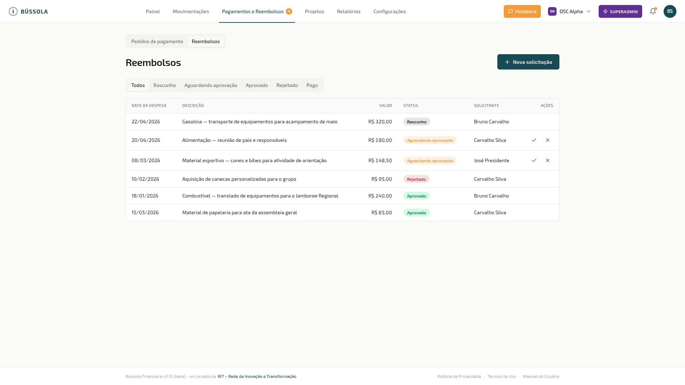
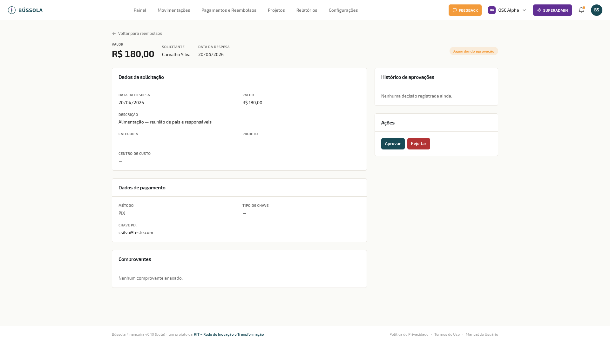
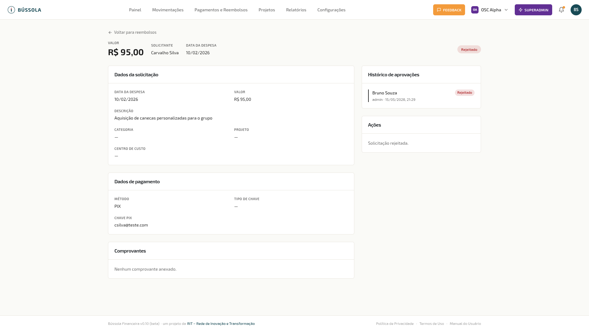
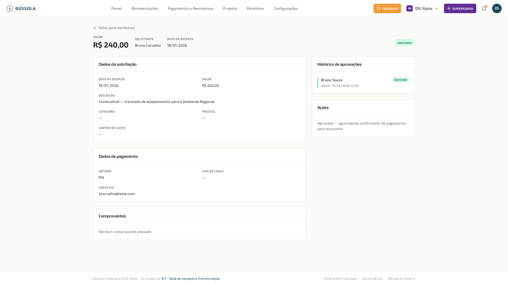
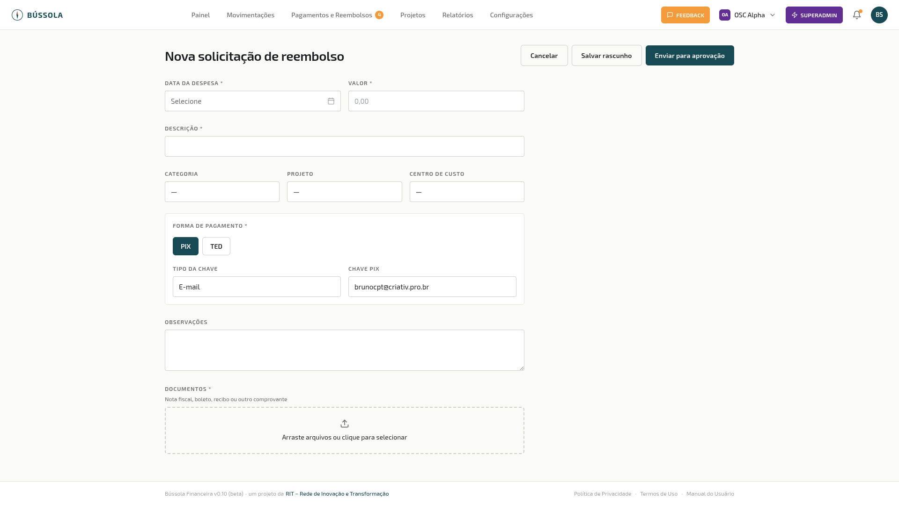

Reembolsos
O módulo de Reembolsos permite que membros solicitem o reembolso de despesas pagas do próprio bolso para atividades da organização — como combustível, alimentação, material, etc.
Acesse pelo menu Pagamentos e Reembolsos → aba Reembolsos.
Lista de reembolsos

{kind=link}
A lista mostra todos os reembolsos da organização. Presidente e Tesoureiro veem todos; Voluntários veem apenas os próprios.
Colunas: Data da despesa, Descrição, Valor, Status, Solicitante, Ações.
Status possíveis:
| Status | Significado |
|---|---|
| ⬜ Rascunho | Salvo mas não enviado para aprovação |
| 🟡 Aguardando aprovação | Enviado, aguardando votação dos aprovadores |
| 🟢 Aprovado | Aprovado, aguardando confirmação de pagamento |
| 🔴 Rejeitado | Reprovado com motivo (pode ser reeditado e reenviado) |
| 💙 Pago | Pagamento confirmado pelo tesoureiro |
Nas linhas com status “Aguardando aprovação”, os aprovadores elegíveis veem os botões ✓ Aprovar e ✕ Rejeitar diretamente na lista.
Detalhe — Aguardando aprovação

{kind=link}
- Valor, Solicitante e Data da despesa no topo
- Status em destaque no canto superior direito
- Dados da solicitação: descrição, categoria, projeto, centro de custo
- Dados de pagamento: método (PIX ou TED) e chave/conta (visível apenas para aprovadores e tesoureiro)
- Comprovantes: documentos anexados pelo solicitante
- Histórico de aprovações: registro de todos os votos com nome, papel e data
- Ações: Aprovar / Rejeitar (para aprovadores)
Detalhe — Rejeitado

{kind=link}
O motivo da rejeição aparece em destaque no topo. O solicitante pode clicar em Editar e reenviar para corrigir e resubmeter.
Detalhe — Aprovado

{kind=link}
O painel de Ações mostra: “Aprovado — aguardando confirmação de pagamento pelo tesoureiro.”
O tesoureiro confirma o pagamento pela movimentação financeira gerada automaticamente em Movimentações.
Nova solicitação de reembolso

{kind=link}
Clique em + Nova solicitação para abrir o formulário.
Campos obrigatórios:
- Data da despesa
- Valor
- Descrição — o que foi comprado e para qual atividade
- Forma de pagamento: PIX ou TED, com dados bancários para recebimento
- Documentos: nota fiscal, recibo ou comprovante da despesa
Campos opcionais: Categoria, Projeto, Centro de custo, Observações.
Dica: Os dados de pagamento são preenchidos automaticamente se você configurou seu Método de pagamento padrão em Configurações → Perfil.
Botões de ação:
- Salvar rascunho — salva sem enviar; você pode editar e enviar depois
- Enviar para aprovação — envia para os aprovadores elegíveis da organização